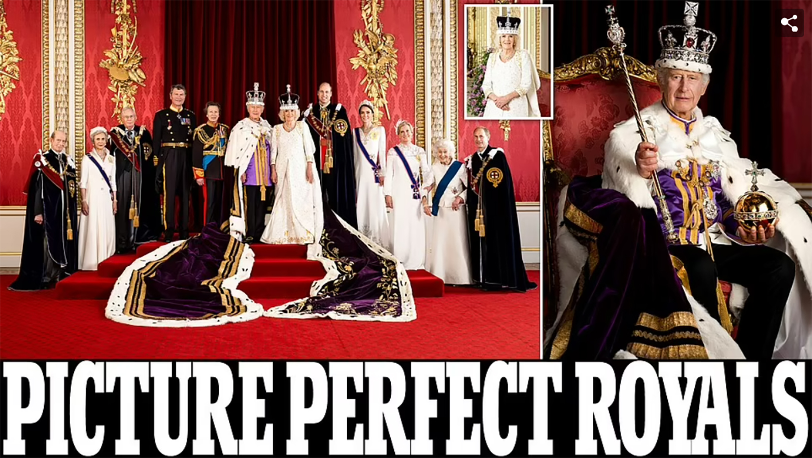
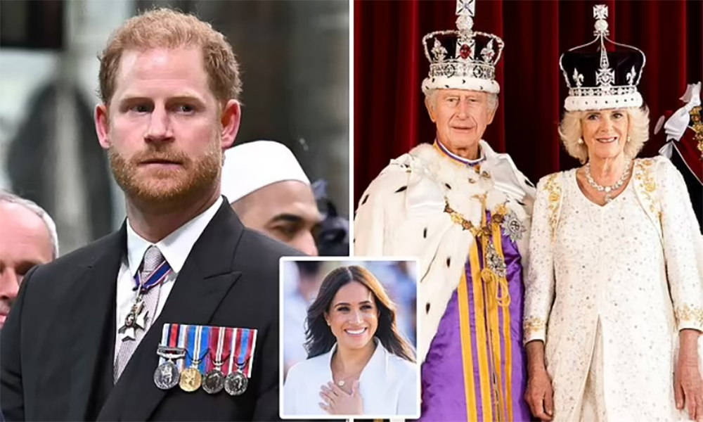
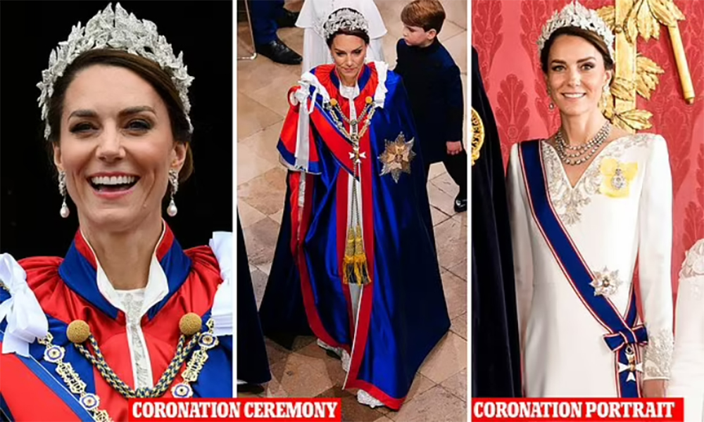
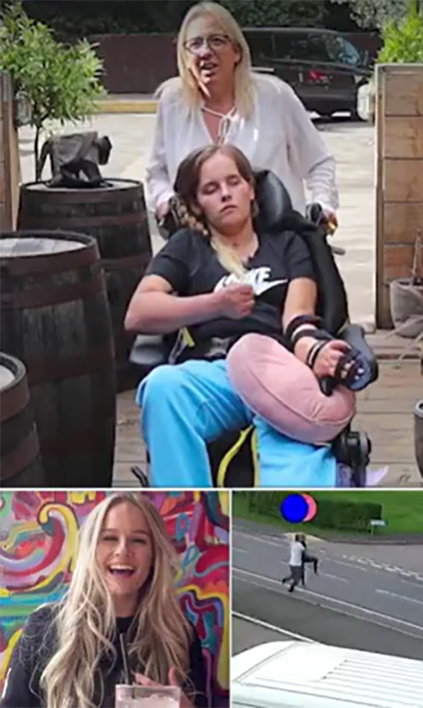
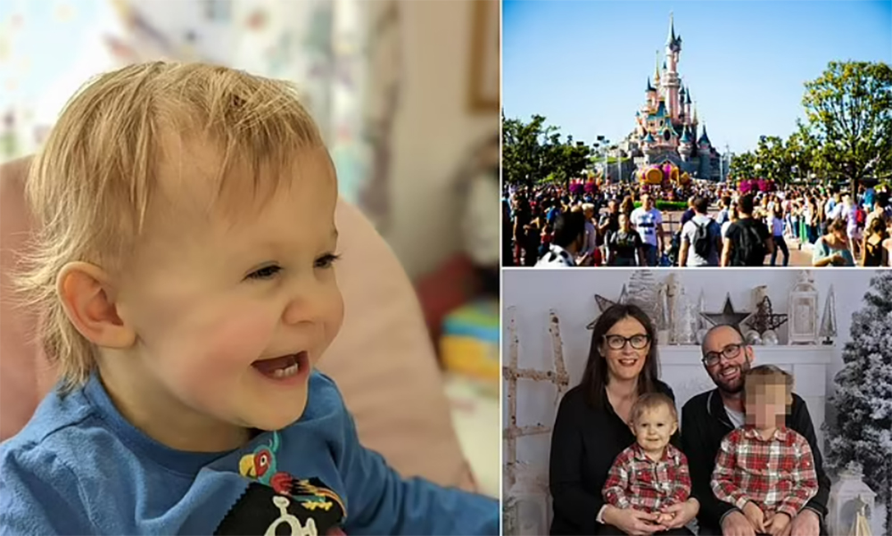
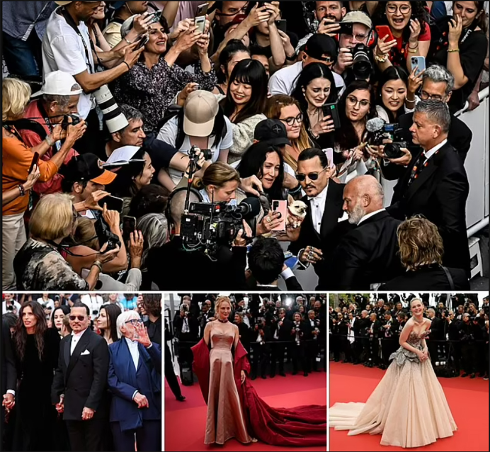

Official Coronation portraits show Charles is 'a King who knows his own mind' who has surrounded himself with a slimmed down monarchy of people he can depend on... and sister Anne being at his right hand is 'no accident', royal expert reveals
King Charles III's (right; centre-left of left photo) first official portrait following the Coronation show him as a 'monarch who knows his own mind', surrounded by 'the people the people he can depend on', a royal expert has said. This came as the first official portraits of the event were released, unveiling the King's new 'slimmed down' monarchy, with Princess Anne (to the left of the King in left photo) and Queen Camilla (inset; centre-right of left) by his side. Royal expert Richard Fitzwilliams told MailOnline said of the King's solo portrait: 'This one is a strong forceful portrait of a monarch who knows his own mind and is very experienced.' Mr Fitzwilliam said that Princess Anne's proximity to the King in the group portrait 'is no accident', adding that the fact she is 'experienced and hard-working' will have been noticed by Charles. He added that Queen Camilla looked 'more relaxed and comfortable' wearing the crown in her solo portrait than she did in Westminster Abbey.
Share 5videosHarry's 'fleeting visit to Buckingham Palace': Duke 'spent 30 minutes at royal residence straight after Coronation before flying back to California to be with Meghan and their children'
The Duke of Sussex (left) slipped in and out of Buckingham Palace during the Coronation without seeing the Royal Family during his visit to Britain, it was claimed. Prince Harry spent less than half an hour at the Palace after the Westminster Abbey service before travelling to Heathrow Airport to return to the United States to be with his wife Meghan (inset) and their children on Saturday. He went to the Palace for 'logistical reasons' to take a moment out of the public eye after the two-hour ceremony and didn't speak to any family members, according to the Telegraph It comes after King Charles III (pictured right with his wife, Queen Camilla) reportedly expressed 'regret' over Prince Harry's invitation and toasted 'those that weren't there' during the Royal Family's celebratory lunch.
Share 5videosBoris and Charles' 'Rwanda bust-up': Row erupts as ex-Number 10 media chief claims former PM 'squared up to' the then-Prince of Wales over his alleged criticism of deportation plan
Boris Johnson 'squared up' to Charles after he branded the Government's Rwanda scheme 'appalling', it was claimed last night.
King Charles 'has BBC cameraman thrown out of Westminster Abbey rehearsals after he spotted him trying to film' the ceremony's most intimate moment
A senior BBC employee was allegedly banned from the King's Coronation after the monarch spotted him 'trying to record one of the secret parts of the ceremony' during rehearsals.
How Prince George created his own footnote in Coronation history
EPHRAIM HARDCASTLE: Prince George created a footnote in history by persuading his grandfather King Charles to change the centuries old uniforms worn by pages of honour.
Coronation photos reveal the hidden details of Kate's outfits as she slips on Queen Elizabeth II's necklace for family portrait - after donning elegant Alexander McQueen outfit for King's crowning
The Duke of Sussex (left) slipped in and out of Buckingham Palace during the Coronation without seeing the Royal Family during his visit to Britain, it was claimed. Prince Harry spent less than half an hour at the Palace after the Westminster Abbey service before travelling to Heathrow Airport to return to the United States to be with his wife Meghan (inset) and their children on Saturday. He went to the Palace for 'logistical reasons' to take a moment out of the public eye after the two-hour ceremony and didn't speak to any family members, according to the Telegraph It comes after King Charles III (pictured right with his wife, Queen Camilla) reportedly expressed 'regret' over Prince Harry's invitation and toasted 'those that weren't there' during the Royal Family's celebratory lunch.
Share 5videosRICHARD KAY: The Coronation was a triumph but - from Andrew and Harry to Commonwealth countries looking to break from the Crown - Charles now faces some real challenges
ICHARD KAY: What are the lasting memories of the Coronation? The moment when the Archbishop of Canterbury appeared to screw the crown to the King's head like a bottle top?
King Charles and Queen Camilla to enjoy a few days off in Sandringham as they recover after a weekend of Coronation celebrations
The King and Queen are to take a break at Sandringham this week as they recover after the weekend of celebrations.
Why did so many royal ladies wear white to the Coronation?
A number of the Firm's ladies opted for ivory and white hues, most notably Queen Camilla and her companions, who made for an ethereal entrance to Westminster Abbey on Saturday.
Angel's miracle! Kidnapped woman left paralysed and brain-damaged after falling headfirst out of van at 60mph defies doctors by standing for first time - as her mother reveals she also hopes to be able to speak again
Share 5videos
Tributes to 'bubbly' mother-of-two who died after being held hostage in house by 'gunman' on Coronation Day - as police launch murder probe
The victim, who has been named on floral tributes as Hayley, passed away in hospital on Monday afternoon after she was held hostage in her own home.
The surprise return of the 100% mortgage scares me, warns JEFF PRESTRIDGE: Young buyers will be trapped if prices fall
Building society Skipton has launched the 'track record' mortgage - aimed at getting the feet of renters on the first rung of the housing ladder.
Meghan and Harry 'hire Kim Kardashian's former bodyguard to protect them in California after firing minder who used to work for Michael Jackson'
Her last message was abrupt': Millie Mackintosh admits she felt 'snubbed' by former pal when she met Prince Harry, after they 'bonded over their divorces
'Stressed' Ben Affleck goes viral for 'slamming' car door behind Jennifer Lopez while out for coffee run in LA
Holly Willoughby was 'blindsided' by Phillip Schofield's statement last night where he said 'the last few weeks haven't been easy' at This Morning.
Swift and Healy sparked romance rumors earlier this month following her shock split from longtime boyfriend Joe Alwyn.
Priyanka Chopra dresses daughter Malti in $395 Louboutin booties and celebrates Mother's Day in London.
Lily Allen speaks out on 'retreating' after the devastating stillbirth of her son, traumatic stalking ordeal and her alleged sexual assault.
Scottish toddler dies after catching Covid on dream Disneyland trip: Heartbroken parents question why doctors didn't give him preventative treatment for another common virus
A toddler died during a dream family holiday to Disneyland Paris (top right) after coming down with Covid and another common virus. Dylan Findlay (left, and bottom right with his parents) died just hours after landing in France with big brother Niall and parents Alison and Robert. A post-mortem examination found the 22-month-old had Covid-19 and respiratory syncytial virus (RSV), a common bug which usually causes mild cold-like symptoms. Mr and Mrs Findlay, of Inverurie, Aberdeenshire, confirmed Dylan had been refused a preventative treatment for RSV by doctors. Mrs Findlay said: 'We'll never know the difference that could have made to him.'
Share 5videosThe reviews are in... and they're a bit merde! Critics brand Johnny Depp's comeback movie Jeanne Du Barry 'a right royal disappointment' despite actor attempting to speak French while playing King Louis XV
Johnny Depp's film Jeanne Du Barry has brought about a mixed bag of reviews, with some critics impressed by his French spoken word, while others offered differing views.
All eyes on blue! Dame Helen Mirren, 77, debuts a dramatic new dye job (which perfectly matches her sweeping gown) as she attends Jeanne du Barry premiere during Cannes Film Festival opening night
The actress, 77, showcased her unique sense of style as she perfectly matched the colour of her quirky new do to her gown.
'I was in a trance': Tech executive is scammed out of $450,000 by man she met on Hinge in cruel 'pig butchering' ploy - which experts warn is on the rise
Tech executive Shreya Datta fell victim to a 'pig butchering' scam - which sees romance fraudsters charm single individuals into investing in fake cryptocurrencies.
'Why are you asking me specifically?' Awkward moment Brie Larson says she doesn't know if she'll watch Johnny Depp film opening Cannes - after being vocal in #MeToo movement
Brie Larson was left fuming after she was asked an awkward question about Johnny Depp's controversial comeback film opening the Cannes Film Festival this week.
Sydney Sweeney is a blonde bombshell in a VERY racy sheer black dress as she hits the red carpet at a screening of her film Reality in NYC
Scott Disick puts on a casual display in zip-up hoodie and baggy pants as he steps out for shopping trip in Calabasas
'She made you a father!' Chris Pratt is branded 'TRASH' for leaving ex Anna Faris out of his gushing Mother's Day.
Sylvester Stallone chats about comparisons to the Kardashians ahead of the debut of his family's new reality show The Family Stallone.
Anne Hathaway dazzles in a gold hooded gown with racy thigh-high split and HUGE diamond necklace at swanky Bulgari party in Venice.
Amber Heard is pictured with her daughter in Madrid as Johnny Depp makes triumphant appearance at Cannes Film Festival.
'I was in a bad way but was good at hiding it': Tom Grennan reveals The Libertine's Pete Doherty saved him from drugs at the start of his career.
Moment Rebekah Vardy was stonewalled as she tried to confront Jehovah's Witness elders about sexual abuse she suffered that the Church covered up.
Erase years off your face! Shoppers are 'blown away' by the results of this celebrity-approved moisturiser.
John Cena reveals that a chance run-in with Barbie star Margot Robbie led to him being cast in the comedy film: 'It was a happy accident'.
Here's Johnny! Leading man Depp arrives to cheers from fans as he makes his red carpet return for Cannes Film Festival's opening night after his toxic legal battle with Amber Heard
The Cannes red carpet returned as the 76th Film Festival got underway on Tuesday evening with the premiere of Louis XV period drama Jeanne du Barry - but for those gathered on the famous Croisette this balmy evening on the French Riviera the only plot was one of redemption. Indeed, there were ripples of applause underscoring the universally raucous cheers of support that greeted the almost-cancelled Johnny Depp as he made his first appearance at the annual ceremony, and more pertinently, his first since winning his highly publicised libel trial against his ex-wife Amber Heard. It was the sweetest vindication for the actor, 59, who takes on the role of Louis XV, couldn't hide his delight about being back in the Hollywood fold, after previously being dropped from several projects during the trial, including the Fantastic Beasts film franchise. Also on the red carper was Uma Thurman (bottom centre) and Elle Fanning (bottom right).
Share 5videosRevealed: How Labour tried to change the law so millions of migrants would be able to vote - as Keir Starmer is accused of trying to 'rig' future general elections
The proposals would have covered EU citizens with 'settled status' in Britain and other overseas arrivals with 'indefinite leave to remain.
Investment banker, 31, 'raped woman he met on Bumble in his £1m apartment after she told him she did not have sex on a first date'.
Varun Venaik, 31, kissed and touched the woman intimately with her consent before forcing himself on her in his £1m apartment.
Police quiz 'arsonist' who 'went street to street on a motorbike and deliberately torched 13 cars' in quaint market town during rampage
A suspected arsonist, who is in his 40s and local to Wimborne, Dorset, was arrested following the series of car fires (pictured) last Sunday night in the quaint market town.
'Why are you asking me specifically?' Awkward moment Brie Larson says she doesn't know if she'll watch Johnny Depp film opening Cannes - after being vocal in #MeToo movement
Brie Larson was left fuming after she was asked an awkward question about Johnny Depp's controversial comeback film opening the Cannes Film Festival this week.
Sydney Sweeney is a blonde bombshell in a VERY racy sheer black dress as she hits the red carpet at a screening of her film Reality in NYC
Scott Disick puts on a casual display in zip-up hoodie and baggy pants as he steps out for shopping trip in Calabasas
'She made you a father!' Chris Pratt is branded 'TRASH' for leaving ex Anna Faris out of his gushing Mother's Day.
Sylvester Stallone chats about comparisons to the Kardashians ahead of the debut of his family's new reality show The Family Stallone.
Anne Hathaway dazzles in a gold hooded gown with racy thigh-high split and HUGE diamond necklace at swanky Bulgari party in Venice.
Amber Heard is pictured with her daughter in Madrid as Johnny Depp makes triumphant appearance at Cannes Film Festival.
'I was in a bad way but was good at hiding it': Tom Grennan reveals The Libertine's Pete Doherty saved him from drugs at the start of his career.
Moment Rebekah Vardy was stonewalled as she tried to confront Jehovah's Witness elders about sexual abuse she suffered that the Church covered up.
Erase years off your face! Shoppers are 'blown away' by the results of this celebrity-approved moisturiser.
John Cena reveals that a chance run-in with Barbie star Margot Robbie led to him being cast in the comedy film: 'It was a happy accident'.
'It will get tougher for me': The Chase star Paul Sinha reveals he's 'fighting as hard as ever' as he continues to battle with Parkinson's disease.
He talked about wanting to rape his wife!' Ulrika Jonsson SLAMS 'Hollywood hypocrites' for fawning over Johnny Depp at Cannes Film Festival.
Here's Johnny! Leading man Depp arrives to cheers from fans as he makes his red carpet return for Cannes Film Festival's opening night after his toxic legal battle with Amber Heard
The Cannes red carpet returned as the 76th Film Festival got underway on Tuesday evening with the premiere of Louis XV period drama Jeanne du Barry - but for those gathered on the famous Croisette this balmy evening on the French Riviera the only plot was one of redemption. Indeed, there were ripples of applause underscoring the universally raucous cheers of support that greeted the almost-cancelled Johnny Depp as he made his first appearance at the annual ceremony, and more pertinently, his first since winning his highly publicised libel trial against his ex-wife Amber Heard. It was the sweetest vindication for the actor, 59, who takes on the role of Louis XV, couldn't hide his delight about being back in the Hollywood fold, after previously being dropped from several projects during the trial, including the Fantastic Beasts film franchise. Also on the red carper was Uma Thurman (bottom centre) and Elle Fanning (bottom right).
Share 5videosRevealed: How Labour tried to change the law so millions of migrants would be able to vote - as Keir Starmer is accused of trying to 'rig' future general elections
The proposals would have covered EU citizens with 'settled status' in Britain and other overseas arrivals with 'indefinite leave to remain.
Investment banker, 31, 'raped woman he met on Bumble in his £1m apartment after she told him she did not have sex on a first date'.
Varun Venaik, 31, kissed and touched the woman intimately with her consent before forcing himself on her in his £1m apartment.
Police quiz 'arsonist' who 'went street to street on a motorbike and deliberately torched 13 cars' in quaint market town during rampage
A suspected arsonist, who is in his 40s and local to Wimborne, Dorset, was arrested following the series of car fires (pictured) last Sunday night in the quaint market town.
'Why are you asking me specifically?' Awkward moment Brie Larson says she doesn't know if she'll watch Johnny Depp film opening Cannes - after being vocal in #MeToo movement
Brie Larson was left fuming after she was asked an awkward question about Johnny Depp's controversial comeback film opening the Cannes Film Festival this week.
Sydney Sweeney is a blonde bombshell in a VERY racy sheer black dress as she hits the red carpet at a screening of her film Reality in NYC
Scott Disick puts on a casual display in zip-up hoodie and baggy pants as he steps out for shopping trip in Calabasas
'She made you a father!' Chris Pratt is branded 'TRASH' for leaving ex Anna Faris out of his gushing Mother's Day.
Sylvester Stallone chats about comparisons to the Kardashians ahead of the debut of his family's new reality show The Family Stallone.
Anne Hathaway dazzles in a gold hooded gown with racy thigh-high split and HUGE diamond necklace at swanky Bulgari party in Venice.
Amber Heard is pictured with her daughter in Madrid as Johnny Depp makes triumphant appearance at Cannes Film Festival.
'I was in a bad way but was good at hiding it': Tom Grennan reveals The Libertine's Pete Doherty saved him from drugs at the start of his career.
Moment Rebekah Vardy was stonewalled as she tried to confront Jehovah's Witness elders about sexual abuse she suffered that the Church covered up.
Erase years off your face! Shoppers are 'blown away' by the results of this celebrity-approved moisturiser.
John Cena reveals that a chance run-in with Barbie star Margot Robbie led to him being cast in the comedy film: 'It was a happy accident'.
'It will get tougher for me': The Chase star Paul Sinha reveals he's 'fighting as hard as ever' as he continues to battle with Parkinson's disease.
He talked about wanting to rape his wife!' Ulrika Jonsson SLAMS 'Hollywood hypocrites' for fawning over Johnny Depp at Cannes Film Festival.